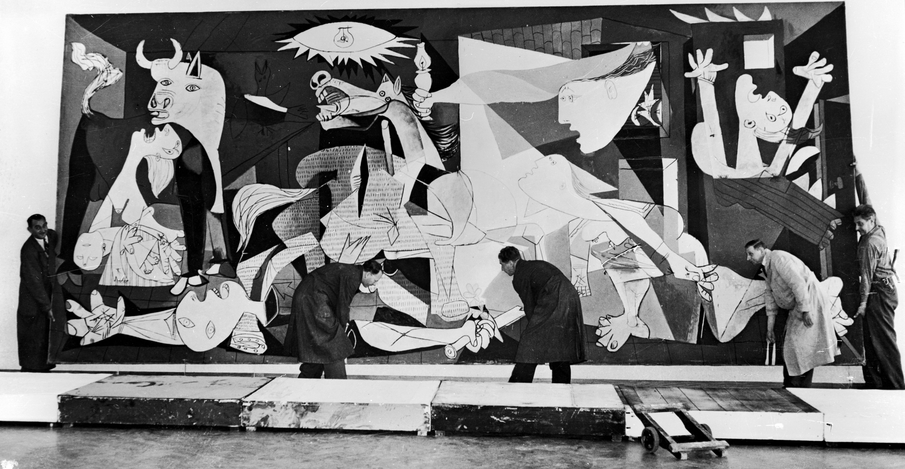

Guernica es un cuadro de Pablo Picasso, pintado en París2 entre los meses de mayo y junio de 1937, cuyo
título
alude al bombardeo de Guernica, ocurrido el 26 de abril de dicho año (1937), durante la guerra civil
española.
Fue realizado por encargo del director general de Bellas Artes, Max Aub, a petición del Gobierno de la
Segunda.
